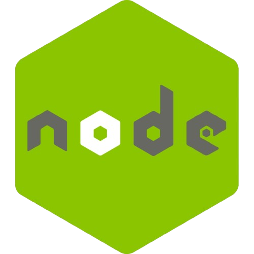

MessagesFX
Tecnologías Utilizadas
 ㅤㅤㅤㅤ
ㅤㅤㅤㅤ

ㅤㅤㅤㅤMessagesFX: una aplicación de mensajería de escritorio creada en Java con una interfaz gráfica moderna gracias a JavaFX. Esta herramienta está pensada para ofrecer una experiencia de chat en tiempo real, combinando una interfaz cuidada con una arquitectura técnica robusta.
Permite a los usuarios registrarse e iniciar sesión para acceder a su espacio privado, donde pueden ver en tiempo real la lista de usuarios conectados. Una vez dentro, los usuarios pueden enviar mensajes instantáneos que aparecen al momento en el área de chat. Además, pueden personalizar su perfil, cambiar la imagen o cerrar sesión fácilmente.
El backend está desarrollado con Node.js y Express, garantizando una gestión fluida de usuarios y mensajes. Toda la información, desde los perfiles hasta el historial de chat, se almacena de forma organizada en una base de datos MongoDB.